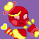
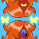
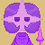
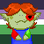
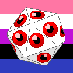

Irita, a Kirby OC based on the Rainbow Sword.

Lola, a Kirby OC based on the Love Love Stick.

Onsra and Moiety, Kirby OCs based on the Doomblades.

Starshatterer, Kirby OC based on Galacta Knight's lance.

Atticus Atlas using SketchMichi's Lick Icon Base

Genderfluid Miracle Matter.